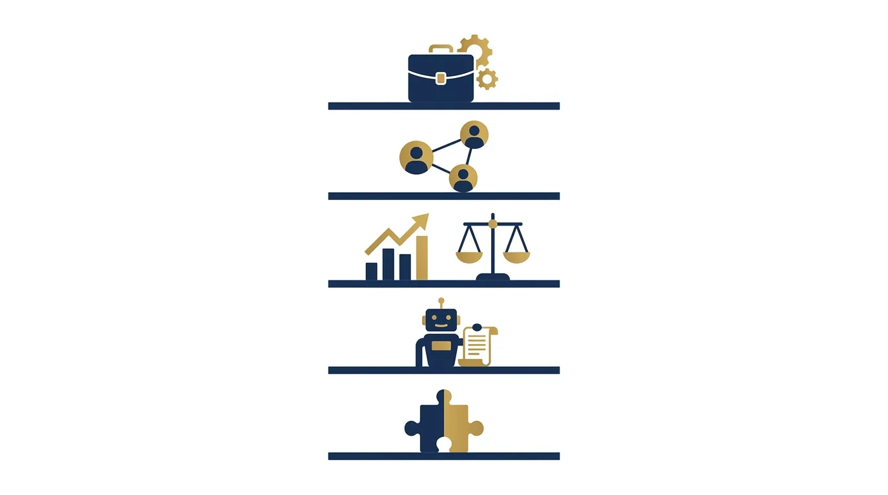

Software Jurídico: Como Escolher o Ideal
Todo escritório vive essa cena: a rotina aperta, os prazos se multiplicam em planilhas e grupos de WhatsApp, e alguém decreta que "está na hora de contratar um software jurídico". Seguem-se três demonstrações deslumbrantes, uma assinatura anual, dois meses de entusiasmo e, com frequência constrangedora, o retorno silencioso às planilhas, agora com uma mensalidade a mais no custo fixo.
O problema raramente é a ferramenta. É o método de escolha: comprar software jurídico pela demonstração é como contratar associado pela gravata. A decisão certa começa antes de qualquer tela, no desenho do que o escritório precisa, e termina depois da assinatura, na implantação que quase ninguém planeja.
Este guia organiza a compra de ponta a ponta: as categorias de software jurídico e o que cada uma resolve, mais os critérios que separam a escolha madura do impulso. Na sequência, as perguntas para fazer na demonstração e o roteiro de implantação que faz a ferramenta pegar.
Comecemos alinhando expectativa sobre o que a ferramenta pode e não pode fazer. Software jurídico organiza informação, automatiza rotina e devolve visibilidade; ele não conserta processo inexistente, não cria disciplina que a banca não tem e não substitui a decisão de quem gerencia. As melhores histórias de adoção começam com um fluxo de trabalho já razoável que a ferramenta tornou escalável; as piores começam com a fantasia de que o sistema arrumaria sozinho a casa. Com a expectativa calibrada, o mapa de categorias abaixo fica mais fácil de usar: você não está procurando um milagre, está procurando a prateleira certa para a sua dor mais cara.
As categorias de software jurídico (e o que cada uma resolve)
"Software jurídico" virou guarda-chuva para produtos muito diferentes, e o primeiro erro de compra é não saber qual prateleira olhar. O mapa do mercado, que detalhamos no panorama de legaltechs e lawtechs (as empresas de tecnologia voltadas ao mundo jurídico), se organiza assim:
| Categoria | O que resolve | Sinal de que você precisa |
|---|---|---|
| Gestão processual e de escritório | Processos, prazos, tarefas, agenda, documentos e financeiro básico | Prazos em planilha, pastas espalhadas, sustos recorrentes |
| CRM jurídico (gestão do relacionamento com clientes) | Contatos, oportunidades e as etapas até o contato virar cliente | Contatos que esfriam sem resposta, retornos prometidos guardados só na memória |
| Jurimetria e análise | Estatísticas de decisões, estimativas de tempo e resultado | Estratégia definida só pela intuição |
| IA e automação de documentos | Minutas, resumos, revisão assistida | Horas de advogado gastas em texto repetitivo |
| Nichos específicos | Cálculo trabalhista/previdenciário, gestão de acordos, compliance | Dor concentrada numa rotina especializada |
Duas observações de quem já viu muitas compras. Primeiro: a fundação é a gestão processual; contratar IA sofisticada com prazo ainda em planilha é trocar o telhado com a fundação rachada. Segundo: as categorias convergem (os sistemas de gestão vão anexando CRM e IA), mas convergência de cardápio não é qualidade de prato; avalie cada função que pretende usar, não a lista de recursos do site.
Sobre a segunda categoria, aliás, há um guia dedicado de CRM para advogados; e sobre a terceira, o nosso material de jurimetria para pequenos escritórios mostra que análise de dados deixou de ser luxo de banca grande.

Atenção: desconfie da compra motivada por pânico (perdeu um prazo ontem) ou por vitrine (o concorrente anunciou que usa). As duas geram contratos de um ano para dores mal diagnosticadas. Software se escolhe com processo mapeado e cabeça fria.
Os critérios que separam a boa escolha do impulso
Depois de saber a categoria, a comparação entre candidatos sai melhor com critérios escritos antes das demonstrações. Os oito que mais pesam na prática:
- Aderência ao seu fluxo. O sistema se adapta ao jeito de a banca trabalhar ou exige que a banca vire outra? Alguma adaptação é saudável; refundação nunca pega;
- Facilidade real de uso. Quem vai usar todo dia são o estagiário e a secretária, e não quem assistiu à demonstração. Teste com eles antes de assinar;
- Captura de publicações e prazos. Na gestão processual, é o coração: cobertura dos tribunais onde você atua, confiabilidade e alertas em camadas;
- Acesso e mobilidade. Sistema em nuvem (dados em servidores na internet, acessíveis de qualquer lugar, e não presos ao computador do escritório), aplicativo decente, funcionamento no fórum e na rua;
- Segurança e LGPD. Onde os dados ficam, quem acessa, criptografia, histórico de incidentes do fornecedor, cláusulas de confidencialidade: dados de cliente exigem o mesmo rigor que detalhamos no guia de cibersegurança para escritórios;
- Integrações. Conversa com agenda, e-mail, WhatsApp e com o que mais a banca usa? Sistema ilhado cria retrabalho digitado;
- Suporte em português de gente. Teste o suporte durante o período gratuito com uma dúvida real e cronometre;
- Custo total e porta de saída. Mensalidade por usuário, custos de implantação e treinamento, e a pergunta que ninguém faz na euforia: como os meus dados saem daqui se eu quiser trocar? Exportação completa é cláusula, não favor.
O oitavo critério merece destaque: a troca de sistema é traumática o bastante para gerar dependência silenciosa. Fornecedor sério oferece exportação em formato aberto, aquele que qualquer programa lê, como planilha ou PDF; a resposta evasiva nessa pergunta é informação valiosa.
As perguntas certas na demonstração
A demonstração é território do vendedor: roteiro ensaiado, dados perfeitos, tudo funciona. As perguntas abaixo trazem a conversa para o seu terreno:
- "Me mostre exatamente o fluxo de um caso novo, do cadastro ao primeiro prazo cumprido, com os cliques reais";
- "Quais tribunais e diários a captura de publicações cobre, e qual o procedimento quando ela falha?";
- "O que acontece com os meus dados se eu cancelar? Em que formato saem, em quanto tempo?";
- "Qual o tempo médio de resposta do suporte, e por qual canal?";
- "Que parte da implantação é de vocês e que parte é minha? Quantas horas de treinamento estão incluídas?";
- "Posso falar com dois escritórios do meu porte que usam há mais de um ano?".
E uma técnica simples que muda o jogo: leve um caso real (anonimizado) e peça para você mesmo executar o fluxo ao vivo, no teclado. A distância entre a demonstração do vendedor e a sua mão na ferramenta é exatamente a distância que a sua equipe vai sentir.
Período de teste bom é o que simula rotina: cadastre casos reais, deixe os alertas rodarem duas semanas, teste o aplicativo no dia de audiência. Avaliação de fim de semana só avalia a paciência de quem testou.
Um parêntese sobre o advogado solo, que costuma se achar fora dessa conversa: a lógica é a mesma em miniatura. O solo não tem reunião de implantação nem equipe para treinar, mas tem o mesmo inimigo (a planilha paralela) e o mesmo remédio (data de corte e constância nas primeiras semanas). A vantagem é que a decisão de adoção depende de uma pessoa só; a desvantagem é que a desistência também, e sem ninguém para cobrar. O solo que trata o software jurídico como sócio silencioso da operação colhe proporcionalmente até mais que a banca grande, porque cada hora liberada é hora do único advogado da casa.
Implantação: onde as compras certas morrem
A constatação cruel do setor: boa parte dos softwares abandonados foi bem escolhida e mal implantada. A ferramenta chegou, ninguém migrou os dados direito (isto é, ninguém transferiu para o sistema o que vivia nas planilhas e pastas), metade da equipe continuou na planilha "só por segurança", e seis meses depois o sistema virou custo sem uso.
O roteiro de implantação que funciona em bancas reais:
- Um dono do projeto. Alguém responde pela implantação, com prazo e autoridade, ainda que não seja sócio;
- Migração seletiva. Migre os casos ativos com capricho; o arquivo morto pode entrar depois, aos poucos. Migração perfeccionista é a primeira causa de atraso infinito;
- Data de corte. A partir do dia X, a verdade mora no sistema: prazo que não está nele não existe. Meia adoção é pior que nenhuma, porque cria duas fontes de verdade;
- Treinamento por papel. Cada função aprende o seu fluxo, não o sistema inteiro. Grave os treinamentos para quem chegar depois;
- Rotina de auditoria no primeiro trimestre. Reunião quinzenal curta: o que travou, o que ninguém está usando, o que precisa de ajuste com o fornecedor;
- Aposentadoria oficial das planilhas. Com cerimônia, se preciso. Enquanto a planilha viver, o sistema não pega.
Como saber, no primeiro trimestre, se a implantação vai bem? Os sinais têm leitura objetiva:
| Sinal observado | Diagnóstico | Correção |
|---|---|---|
| Prazos ainda conferidos na planilha "por garantia" | Data de corte não foi respeitada | Reafirmar a regra e aposentar a planilha oficialmente |
| Metade da equipe não entra no sistema há dias | Treinamento por papel falhou ou fluxo não aderiu | Sessão de ajuste por função; simplificar cadastros |
| Cadastros pela metade, casos sem responsável | Falta padrão mínimo de preenchimento | Checklist de campos obrigatórios no fluxo de entrada |
| Alertas ignorados por excesso de ruído | Configuração de notificações errada | Recalibrar camadas de alerta com o fornecedor |
| Ninguém olha os relatórios | Painel não entrou na rotina de gestão | Amarrar os relatórios à reunião mensal |
Atenção: implantação não é evento, é trimestre. O escritório que trata a chegada do software jurídico como "instalou, acabou" entra nas estatísticas de abandono; o que audita quinzenalmente por noventa dias fica com a ferramenta pelos próximos dez anos.
O prêmio de fazer direito aparece em camadas: primeiro o alívio operacional (prazos sob controle, buscas instantâneas), depois os dados. Sistema alimentado por um ano vira raio-X da banca: quanto tempo cada tipo de caso consome, onde está o gargalo, qual cliente dá lucro. É a matéria-prima dos indicadores de desempenho (KPIs) que tratamos no guia de KPIs jurídicas, e o que transforma software de despesa em instrumento de gestão.
E há uma camada além: operação organizada muda a captação. Escritório com fluxo redondo responde a contato em minutos, atualiza cliente sem ser cobrado e colhe avaliações melhores. Tecnologia interna e demanda externa giram juntas, e é bom escolher o sistema já pensando nas duas.
Resta a pergunta de timing que muita banca se faz: trocar o sistema atual ou insistir? A régua honesta tem três perguntas. O problema é da ferramenta ou da implantação? (Se a equipe nunca adotou de verdade, trocar de software só troca o cenário do mesmo filme.) O fornecedor evolui? (Roadmap parado e suporte decadente são prenúncio de abandono.) O custo da dor supera o custo da troca? (Some as horas perdidas com contornos e retrabalho por mês; o número costuma surpreender.) Duas respostas ruins em três justificam iniciar a busca, desta vez com o método deste guia desde o primeiro contato.
E na troca, a lição aprendida à força por quem já passou: negocie a saída antes de precisar dela. A exportação dos dados do sistema velho, com prazo e formato definidos, é a primeira cláusula da migração, e o momento de maior poder de negociação com o fornecedor novo é antes da assinatura, nunca depois.
Perguntas frequentes sobre software jurídico
O que um software jurídico faz?
Depende da categoria: os de gestão cuidam de processos, prazos, tarefas, documentos e financeiro; os CRMs organizam contatos e captação; os de jurimetria analisam dados de decisões; os de IA automatizam minutas e resumos. O primeiro passo da escolha é saber qual dessas dores é a sua.
Qual o melhor software jurídico?
O que se adapta ao seu fluxo, cobre os tribunais onde você atua, a sua equipe consegue usar e cabe no custo total. Rankings ajudam a montar a lista de candidatos, mas a resposta certa sai do teste com casos reais e da conversa com escritórios do seu porte que já usam.
Escritório pequeno ou advogado solo precisa de software jurídico?
A partir de algumas dezenas de casos ativos, a conta muda de "se" para "qual": o custo de um prazo perdido supera anos de mensalidade. Para operações muito pequenas, planilhas bem organizadas seguram o começo, com a mudança planejada antes do caos, não depois dele.
Quanto custa um software jurídico?
O mercado trabalha, em geral, com mensalidade por usuário, em faixas que variam conforme categoria e porte. Ao comparar, some o custo total: implantação, treinamento, módulos extras e o tempo interno da migração. E confirme, antes de assinar, as condições de saída e exportação dos dados.
Como fazer a equipe usar o sistema de verdade?
Com implantação planejada: um dono do projeto, migração dos casos ativos, data de corte a partir da qual a verdade mora no sistema, treinamento por função e auditoria quinzenal no primeiro trimestre. E desativando as planilhas de vez: sistema convivendo com planilha nunca vira a fonte oficial.
Software jurídico substitui o financeiro ou o CRM da banca?
Os sistemas de gestão trazem módulos financeiros e de CRM que atendem bancas pequenas e médias. Operações maiores ou com captação intensa costumam combinar o sistema jurídico com um CRM dedicado. O critério é o de sempre: avaliar a função que você vai usar, não o nome do módulo.
Software jurídico é alavanca quando entra por processo e vira mobília cara quando entra por impulso. Diagnostique a dor, escreva os critérios, teste com casos reais e implante com data de corte. E lembre que a organização interna é metade da história: a outra metade é encher essa máquina de clientes, e dessa metade a JuriDigital entende bem.